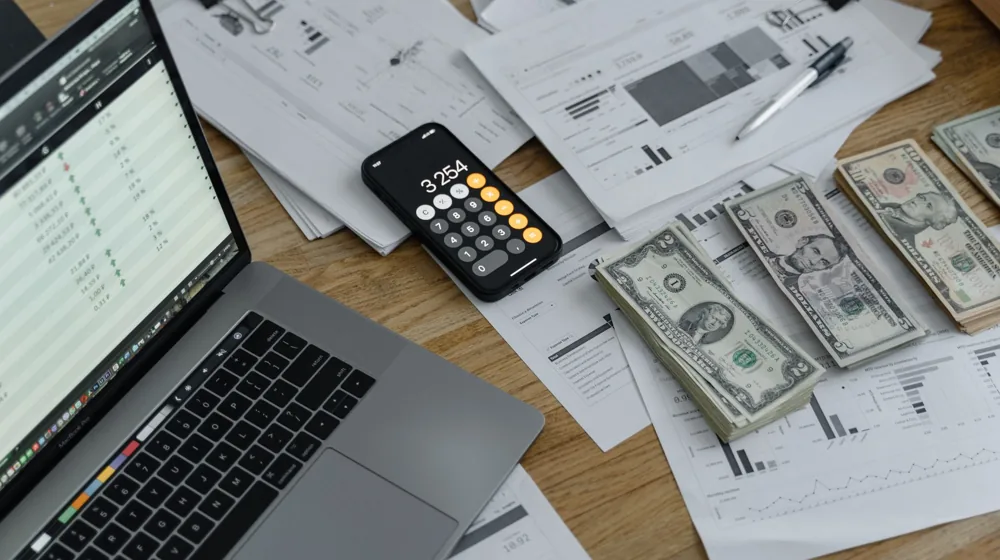

소상공인 정책자금 종류, 내게 맞는 건? 신청 전 이것만 확인하세요!
사진: Anastasia Shuraeva / Pexels (무료 이미지, 출처 표기)
소상공인 정책자금, 복잡하고 어려우신가요?

사업 운영에 필요한 자금을 찾고 계시지만, 수많은 소상공인 정책자금의 종류와 조건 때문에 어떤 자금을 신청해야 할지 막막하신가요? 흔히 놓치는 핵심 포인트를 짚어드리고, 내 사업에 가장 적합한 자금을 선택할 수 있도록 주요 정책자금을 한눈에 비교 분석해 드립니다. 이 글을 통해 성공적인 자금 확보 전략을 세워보세요.
소상공인 정책자금은 정부가 소상공인의 경영 안정과 성장 지원을 위해 저렴한 금리로 제공하는 대출 상품을 말합니다. 주로 소상공인시장진흥공단(이하 소진공)을 통해 집행되며, 직접 대출과 은행을 통한 대리 대출 방식이 있습니다.
소상공인 정책자금, 어떤 것들이 있을까요?
소상공인 정책자금은 크게 소진공 직접 대출과 금융기관을 통한 대리 대출로 나뉩니다. 직접 대출은 소진공이 직접 심사하고 자금을 빌려주는 방식이며, 대리 대출은 시중은행이 대출을 실행하고 소진공이 보증 또는 이자 지원을 하는 형태입니다.
각 자금은 대출 목적, 대상, 한도, 금리 등에 따라 세분화됩니다. 예를 들어, 운영자금이나 시설자금 지원을 위한 일반적인 자금부터, 재해 피해 복구, 혁신 성장, 고용 창출 등 특정 목적을 위한 특별 자금까지 다양하게 마련되어 있습니다.
내 사업에 맞는 정책자금 찾는 법: 핵심 비교 포인트
수많은 정책자금 중 내 사업에 가장 적합한 것을 찾으려면 몇 가지 핵심 비교 포인트를 고려해야 합니다. 무작정 신청하기보다는 다음 기준들을 미리 점검해 보세요.
- 대출 목적: 운영자금이 필요한가요, 시설 확장이 필요한가요, 아니면 특정 위기 극복이 목적인가요? 각 자금은 명확한 목적을 가집니다.
- 지원 대상: 내 사업장이 소상공인 기준(상시근로자 수, 업종별 매출액 등)에 부합하는지, 그리고 특정 업력이나 업종 제한은 없는지 확인해야 합니다.
- 대출 한도 및 기간: 필요한 자금 규모와 상환 계획에 맞는 한도와 대출 기간을 제공하는지 확인하는 것이 중요합니다.
- 금리 및 상환 방식: 고정 금리인지 변동 금리인지, 거치 기간 후 분할 상환인지 등 금리 조건과 상환 방식을 꼼꼼히 비교하여 상환 부담을 최소화해야 합니다.
- 신청 시기 및 조건: 특정 시기에만 신청 가능한 자금도 있고, 추가적인 교육 이수나 심사 요건을 요구하는 경우도 있습니다.
2024년 주요 소상공인 정책자금 종류별 상세 비교
2024년 현재 소진공에서 운영하는 주요 정책자금의 특징을 비교해 놓았습니다. 아래 표는 일반적인 내용이며, 세부 조건은 매년 변경될 수 있으니 반드시 공식 홈페이지에서 확인하시길 바랍니다.
*2024년 8월 기준이며, 세부 조건 및 한도는 정책 변경에 따라 달라질 수 있습니다. 정확한 내용은 소상공인시장진흥공단 홈페이지(www.semas.or.kr)에서 확인하시길 권장합니다.
정책자금 신청 절차와 준비 서류
소상공인 정책자금은 대부분 온라인을 통해 신청할 수 있습니다. 일반적인 신청 절차는 다음과 같습니다.
- 자금 신청: 소상공인시장진흥공단 정책자금 사이트에서 자금 종류를 선택하고 온라인 신청 접수.
- 사전 서류 제출: 신청에 필요한 사업계획서, 재무제표, 사업자등록증 등 기본 서류를 온라인으로 제출.
- 서류 심사 및 현장 실사: 제출된 서류를 바탕으로 심사가 진행되며, 필요한 경우 사업장에 대한 현장 실사가 이루어질 수 있습니다.
- 대출 결정 및 약정: 심사 통과 시 대출 금액 및 조건이 확정되며, 소진공 또는 협약 금융기관과 대출 약정을 체결.
- 자금 실행: 약정 체결 후 대출금이 사업자 계좌로 입금됩니다.
일반적으로 요구되는 주요 서류:
- 사업자등록증명원
- 최근 2년간 재무제표 (손익계산서, 재무상태표) 또는 부가가치세과세표준증명원
- 법인 등기부등본 (법인 사업자만 해당)
- 대표자 주민등록등본 및 신분증 사본
- 사업장 임대차 계약서 사본 (자가인 경우 건물 등기부등본)
- (필요시) 사업계획서, 상시근로자 확인 서류 등
제출 서류는 자금 종류 및 신청자의 상황에 따라 달라질 수 있으므로, 신청 전 반드시 소진공 홈페이지의 해당 자금별 안내를 확인해야 합니다.
놓치지 말아야 할 정책자금 신청 시 주의사항
성공적인 정책자금 신청을 위해 다음 주의사항들을 꼭 기억하세요.
- 신용등급 관리: 정책자금이라 할지라도 대출 상품이므로 신용등급은 중요한 심사 기준입니다. 평소 신용 관리에 유의해야 합니다.
- 사업계획서의 중요성: 직접 대출의 경우 사업계획서의 완성도가 심사에 큰 영향을 미칩니다. 자금의 필요성, 활용 계획, 상환 능력 등을 구체적이고 설득력 있게 작성해야 합니다.
- 중복 신청 및 잔액 확인: 정책자금은 특정 자금 간 중복 신청이 제한되거나, 기존 정책자금 잔액에 따라 한도가 달라질 수 있습니다. 소진공 정책자금 통합 관리 시스템을 통해 미리 확인하세요.
- 상환 능력 고려: 저금리 대출이라 하더라도 결국 갚아야 할 돈입니다. 무리한 대출은 사업에 부담이 될 수 있으므로, 상환 계획을 철저히 세워야 합니다.
- 공식 채널 이용: 정책자금 신청은 반드시 소상공인시장진흥공단 등 공식 기관을 통해서만 진행해야 합니다. 대행을 빌미로 금품을 요구하거나 보이스피싱을 유도하는 사기에 주의해야 합니다.
소상공인 정책자금은 사업 성장의 든든한 발판이 될 수 있습니다. 내 사업의 현황과 필요에 맞는 자금을 신중하게 선택하고, 철저한 준비를 통해 성공적으로 자금을 확보하시길 바랍니다.
🔗 이 글도 함께 보면 좋아요: 국가장학금 소득분위, 복잡한 계산법? 핵심만 짚어드립니다